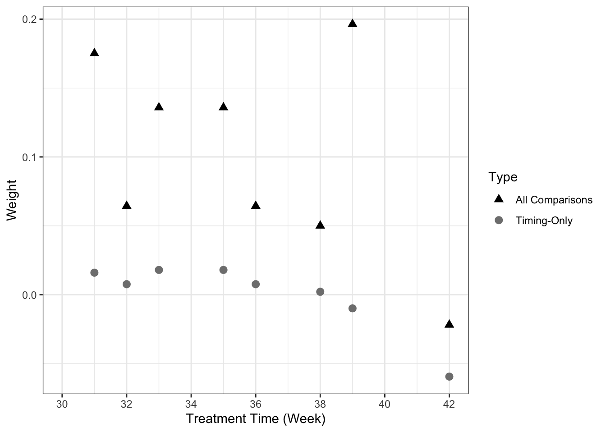
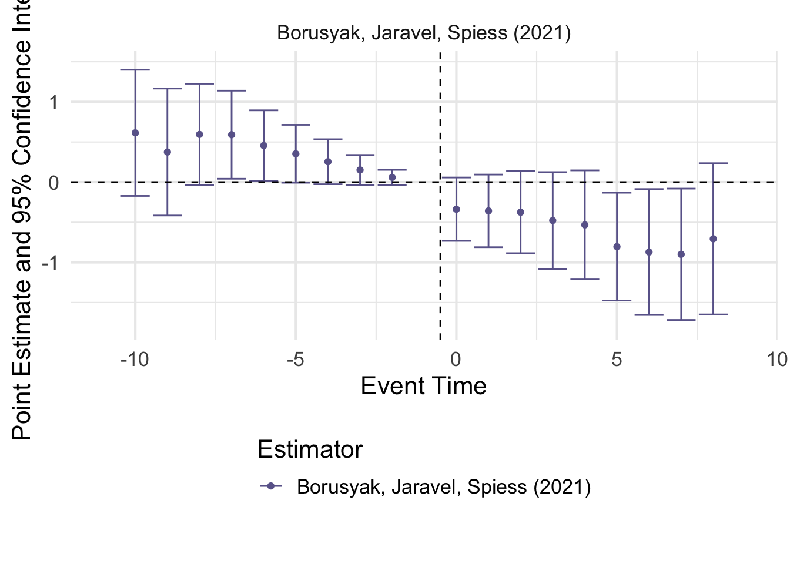

load(file="../data/mandate.Rda")Staggered Adoption DID Analysis: COVID-19 Vaccine Mandates
Setting and Data
The concept of this analysis is based on that in Rains and Richards (2024). The authors seek to understand the effect of COVID-19 vaccine mandates for state employees, which were implemented in 20 U.S. states, beginning on different dates in August–October 2021 (Ballotpedia). The vaccination data used are from the CDC’s COVID Vaccination Trends data set. Note that the data might vary somewhat from that in the Rains and Richards (2024) replication files.
The goal of the analysis is to test the hypothesis that the state mandates increased either the number of first vaccinations in the state or the proportion of the state’s adult population that was fully vaccinated. Although not used by Rains and Richards (2024), we use non-mandate states as controls.
The data are available in the mandate.Rda file. Vax_weekly contains the full data set, by state and summarized by MMWR week, for January 2021 through May 2023, for two variables: SCP has the proportion of the adult population that has a complete vaccination series and D1P has the proportion of the adult population with at least one dose. The weekly increments are in the _diff variables. Information on the mandate for each start are in the Mandate_Start, ever_mandate, and mandate variables, and lead/lag information by week is in Wks_mandate and LeadLag.
First, load the data into R.
Libraries
Again, we will use tidyverse and knitr for general coding and lme4 for clustered TWFE models. Roth et al. (2023) has a summary table with R packages that implement advanced DID methods. We will use three of them:
bacondecompimplements the decomposition from Goodman-Bacon (2021);did2s, described in Butts and Gardner (2022), implements the two-stage DID approach of Gardner (2021), as well as many other proposed methods including the dynamic specification of Borusyak et al. (2024), the IW estimator of Sun and Abraham (2021), and the aggregated approach of Callaway and Sant’Anna (2021); andDIDmultiplegtimplements the first-difference approach of de Chaisemartin and d’Haultfoeuille (2020). Versions of this approach that can handle a wider array of settings, laid out in de Chaisemartin and d’Haultfoeuille (2023) and de Chaisemartin and d’Haultfoeiulle (2024), along with sped-up analytic standard errors are implement in theDIDmultiplegtDYN, which requires Java for installation.
We now load the required libraries.
## If you have not installed these packages before,
## run the following line:
# install.packages(c("bacondecomp","did2s","DIDmultiplegt"))
## Either way, require the libraries:
require(tidyverse)
require(knitr)
require(lme4)
require(bacondecomp)
require(did2s)
require(DIDmultiplegt)Graphical Exploration
We begin by plotting the time series for visual inspection. First, we plot a timeline of the mandate times.
## Plot time series of mandates themselves:
#| fig-cap: "Plot of state employee vaccination mandate timings, U.S. states, June 2021–February 2022"
#| fig-alt: "A bar plot with bars for each state over the time range specified, with twenty states switching from red to blue sometime between August 2021 and October 2021, and the rest remaining red throughout."
ggplot(data=Vax_weekly, mapping=aes(x=End_Date,y=State, fill=mandate)) + geom_tile() +
scale_x_date(name="Date", date_breaks="4 weeks", expand=c(0,0),
limits=c(as.Date("2021-06-05"),as.Date("2022-03-05")),
date_labels="%m/%d/%y") +
theme_bw() + guides(fill="none")Warning: Removed 4250 rows containing missing values or values outside the scale range
(`geom_tile()`).
We can then plot the time series of the outcomes by state, noting which states implement a mandate and when.
## Get lists of the states in the data and the states with a mandate at some point
states <- unique(Vax_weekly %>% pull(State))
mandate_states <- unique(Vax_weekly %>%
dplyr::filter(mandate) %>% pull(State))## Plot time series of first-dose proportion by state:
#| fig-cap: "Plot of the proportion of U.S. adults with at least one COVID-19 vaccine dose, by state and state vaccine mandate status, June 2021–February 2022"
#| fig-alt: "A line plot with lines for each state for dates from June 2021 to February 2022, and first-dose percentages generally increasing from a range around 45–80 at the beginning to a range around 70–90 at the end."
ggplot() +
geom_line(data=Vax_weekly %>% dplyr::filter(!(State %in% mandate_states)),
mapping=aes(x=End_Date, y=D1P, group=State),
color="grey50", linetype="dashed") +
geom_line(data=Vax_weekly %>% dplyr::filter(State %in% mandate_states),
mapping=aes(x=End_Date, y=D1P, group=State,
color=mandate),
linetype="solid") +
scale_color_manual(name="Mandate",
breaks=c(TRUE,FALSE),
values=c("blue","grey50"),
labels=c("Post-Mandate","Pre-/No Mandate")) +
scale_y_continuous(name="First-Dose Percentage",limits=c(0,100), expand=c(0,0)) +
scale_x_date(name="Date", date_breaks="6 weeks", expand=c(0,0),
limits=c(as.Date("2021-06-05"),as.Date("2022-03-05")),
date_labels="%m/%d/%y") +
theme_bw()Warning: Removed 2490 rows containing missing values or values outside the scale range
(`geom_line()`).Warning: Removed 1660 rows containing missing values or values outside the scale range
(`geom_line()`).Several states appear to have implausible declines or rates at 100. We can identify data errors that explain some of these peculiarities, e.g. New Hampshire, Pennsylvania, and Washington. We will exclude these two states from the analysis, but a full analysis should examine the other states as well. We will also limit the analysis weeks to 2021, MMWR weeks 25–42 to both be more focused on timing around the implementation of mandates and exclude some data errors found at other times.
## Exclude New Hampshire, Pennsylvania, Washington:
Vax_adj <- Vax_weekly %>% dplyr::filter(!(State %in% c("NH","PA","WA")))
## Select weeks for analysis:
Yr_Wk_Sel <- paste0("2021_",(25:42))We re-plot on this adjusted group of states and weeks.
## Plot time series of first-dose proportion by state in smaller time window:
#| fig-cap: "Plot of the proportion of U.S. adults with at least one COVID-19 vaccine dose, by state and state vaccine mandate status, July 2021–October 2021"
#| fig-alt: "A line plot with lines for each state for dates from July 2021 to October 2021, and first-dose percentages generally increasing from a range around 45–85 at the beginning to a range around 60–90 at the end."
ggplot() +
geom_line(data=Vax_adj %>% dplyr::filter(!(State %in% mandate_states), Yr_Wk %in% Yr_Wk_Sel),
mapping=aes(x=End_Date, y=D1P, group=State),
color="grey50", linetype="dashed") +
geom_line(data=Vax_adj %>% dplyr::filter(State %in% mandate_states, Yr_Wk %in% Yr_Wk_Sel),
mapping=aes(x=End_Date, y=D1P, group=State,
color=mandate),
linetype="solid") +
scale_color_manual(name="Mandate",
breaks=c(TRUE,FALSE),
values=c("blue","grey50"),
labels=c("Post-Mandate","Pre-/No Mandate")) +
scale_y_continuous(name="Full Vaccination Percentage",limits=c(0,100), expand=c(0,0)) +
scale_x_date(name="Date", date_breaks="3 weeks", expand=c(0,0),
limits=c(as.Date("2021-07-03"),as.Date("2021-10-24")),
date_labels="%m/%d/%y") +
theme_bw()Warning: Removed 29 rows containing missing values or values outside the scale range
(`geom_line()`).Warning: Removed 18 rows containing missing values or values outside the scale range
(`geom_line()`).Similar plotting and analyses could be done on the complete series percentage by replacing D1P in the above code by SCP.
Discussion Questions
Is one outcome better suited to answering the question of interest than the other?
What forms of effect heterogeneity may be present in this staggered adoption setting?
TWFE Models
First, we fit TWFE models (using lmer to get clustered confidence intervals), the so-called “static” specification. We fit it once with just the fixed effects, and once adding D1P_prior as a covariate.
## Fit TWFE model with no covariates:
TWFE_D1P <- lmer(D1P~factor(MMWR_week)+State+mandate+(1|State),
data=Vax_weekly %>% dplyr::filter(Yr_Wk %in% Yr_Wk_Sel))
## Get 95% CI:
TWFE_D1P_CI <- confint(TWFE_D1P, parm="mandateTRUE", level=0.95)Computing profile confidence intervals ...## Fit TWFE model with prior-week as covariate:
TWFE_D1P_ctrl <- lmer(D1P~D1P_prior+factor(MMWR_week)+State+mandate+(1|State),
data=Vax_weekly %>% dplyr::filter(Yr_Wk %in% Yr_Wk_Sel))
TWFE_D1P_ctrl_CI <- confint(TWFE_D1P_ctrl, parm="mandateTRUE", level=0.95)Computing profile confidence intervals ...## Summarize results from the two models:
TWFE_results <- tibble(Model=c("Fixed Effects Only",
"Fixed Effects + Prior Week Value"),
Estimate=format(c(summary(TWFE_D1P)$coefficients["mandateTRUE","Estimate"],
summary(TWFE_D1P_ctrl)$coefficients["mandateTRUE","Estimate"]), digits=3, nsmall=3),
`95% CI`=c(paste(format(TWFE_D1P_CI["mandateTRUE",], digits=3, nsmall=3), collapse=", "),
paste(format(TWFE_D1P_ctrl_CI["mandateTRUE",], digits=3, nsmall=3), collapse=", ")))
## Print the formatted table:
knitr::kable(TWFE_results,
caption="Table of results from TWFE models")| Model | Estimate | 95% CI |
|---|---|---|
| Fixed Effects Only | -0.3803 | -0.6869, -0.0738 |
| Fixed Effects + Prior Week Value | 0.0208 | -0.0659, 0.1074 |
The two models give diverging results, with fairly large confidence intervals, leading to no clear conclusion. The estimates are hard to interpret as well giving the changing circumstances of the states involved.
Goodman-Bacon Decomposition
We can conduct the Goodman-Bacon decomposition of the TWFE model to identify the weights given to different comparisons.
## Conduct the decomposition and print summary:
bacon <- bacon(D1P~mandate,
data=Vax_adj %>% dplyr::filter(Yr_Wk %in% Yr_Wk_Sel),
id_var="State",
time_var="MMWR_week") type weight avg_est
1 Earlier vs Later Treated 0.14186 0.03461
2 Later vs Earlier Treated 0.05819 0.01646
3 Treated vs Untreated 0.79995 -0.61141## Full decomposition:
bacon treated untreated estimate weight type
2 31 99999 -0.1401340996 0.1591059182 Treated vs Untreated
3 38 99999 -1.4331034483 0.0478790958 Treated vs Untreated
4 39 99999 0.3643349754 0.2062484125 Treated vs Untreated
5 33 99999 -0.7011206897 0.1178562357 Treated vs Untreated
6 42 99999 -0.7325219743 0.0375666751 Treated vs Untreated
7 35 99999 0.7076293103 0.1178562357 Treated vs Untreated
8 36 99999 -2.5052843708 0.0567183134 Treated vs Untreated
9 32 99999 -5.3682937752 0.0567183134 Treated vs Untreated
12 38 31 -1.1695238095 0.0026670053 Later vs Earlier Treated
13 39 31 -0.0008333333 0.0121920244 Later vs Earlier Treated
14 33 31 -0.5483333333 0.0030480061 Later vs Earlier Treated
15 42 31 -1.1666666667 0.0025146050 Later vs Earlier Treated
16 35 31 0.5020833333 0.0048768098 Later vs Earlier Treated
17 36 31 -1.8704761905 0.0026670053 Later vs Earlier Treated
18 32 31 -4.1212121212 0.0008382017 Later vs Earlier Treated
20 31 38 1.1515873016 0.0032004064 Earlier vs Later Treated
22 39 38 0.4300000000 0.0005080010 Later vs Earlier Treated
23 33 38 0.8525000000 0.0020320041 Earlier vs Later Treated
24 42 38 0.0833333333 0.0003048006 Later vs Earlier Treated
25 35 38 1.5966666667 0.0015240030 Earlier vs Later Treated
26 36 38 -0.6181818182 0.0005588011 Earlier vs Later Treated
27 32 38 -3.1023809524 0.0010668021 Earlier vs Later Treated
29 31 39 -0.0263888889 0.0182880366 Earlier vs Later Treated
30 38 39 -1.3738461538 0.0016510033 Earlier vs Later Treated
32 33 39 -0.4183333333 0.0121920244 Earlier vs Later Treated
33 42 39 0.0155555556 0.0011430023 Later vs Earlier Treated
34 35 39 0.3530000000 0.0101600203 Earlier vs Later Treated
35 36 39 -2.0200000000 0.0041910084 Earlier vs Later Treated
36 32 39 -4.5371428571 0.0062230124 Earlier vs Later Treated
38 31 33 0.1111111111 0.0018288037 Earlier vs Later Treated
39 38 33 -0.4300000000 0.0012700025 Later vs Earlier Treated
40 39 33 0.5416666667 0.0060960122 Later vs Earlier Treated
42 42 33 -0.1981481481 0.0013716027 Later vs Earlier Treated
43 35 33 0.9250000000 0.0016256033 Later vs Earlier Treated
44 36 33 -1.2214285714 0.0010668021 Later vs Earlier Treated
45 32 33 -1.7571428571 0.0003556007 Earlier vs Later Treated
47 31 42 1.3111111111 0.0150876302 Earlier vs Later Treated
48 38 42 -0.3012820513 0.0039624079 Earlier vs Later Treated
49 39 42 1.3822222222 0.0160020320 Earlier vs Later Treated
50 33 42 0.7560185185 0.0109728219 Earlier vs Later Treated
52 35 42 1.9080952381 0.0106680213 Earlier vs Later Treated
53 36 42 -1.1560606061 0.0050292101 Earlier vs Later Treated
54 32 42 -3.7414285714 0.0053340107 Earlier vs Later Treated
56 31 35 -0.2763888889 0.0036576073 Earlier vs Later Treated
57 38 35 -1.2433333333 0.0007620015 Later vs Earlier Treated
58 39 35 -0.5975000000 0.0040640081 Later vs Earlier Treated
59 33 35 -0.4875000000 0.0016256033 Earlier vs Later Treated
60 42 35 -1.0785714286 0.0010668021 Later vs Earlier Treated
62 36 35 -1.6357142857 0.0003556007 Later vs Earlier Treated
63 32 35 -3.5761904762 0.0010668021 Earlier vs Later Treated
65 31 36 1.3311111111 0.0022860046 Earlier vs Later Treated
66 38 36 0.4200000000 0.0002540005 Later vs Earlier Treated
67 39 36 1.0650000000 0.0015240030 Later vs Earlier Treated
68 33 36 1.0250000000 0.0012192024 Earlier vs Later Treated
69 42 36 0.5833333333 0.0004572009 Later vs Earlier Treated
70 35 36 1.8400000000 0.0005080010 Earlier vs Later Treated
72 32 36 -2.3928571429 0.0007112014 Earlier vs Later Treated
74 31 32 1.3277777778 0.0004572009 Earlier vs Later Treated
75 38 32 1.0833333333 0.0007620015 Later vs Earlier Treated
76 39 32 2.0264285714 0.0035560071 Later vs Earlier Treated
77 33 32 3.1950000000 0.0005080010 Later vs Earlier Treated
78 42 32 1.1966666667 0.0007620015 Later vs Earlier Treated
79 35 32 3.1354166667 0.0012192024 Later vs Earlier Treated
80 36 32 0.6500000000 0.0007112014 Later vs Earlier Treated## Plot decomposition results:
#| fig-cap: "Goodman-Bacon decomposition plot for TWFE model with no covariates"
#| fig-alt: "Scatter plot of weight vs estimate with three types of points: Earlier vs Later Treated, with estimate values from -4.5 to 2 and weights from 0 to 0.025; Later vs Earlier Treated, with estimate values from -4 to 3 and weights from 0 to 0.02; and Treated vs Untreated, with estimate values from -5.5 to 1 and weights from 0.04 to 0.21."
ggplot(data=bacon, mapping=aes(x=estimate,y=weight,shape=type,color=type)) +
geom_point() + theme_bw()
The decomposition indicates that the vast majority of the weight is on Treated vs Untreated comparisons (because of the large number of untreated units). One particular observation has a large negative estimate driving the overall estimate.
Dynamic Specification and IW Estimator
The event_study function in the did2s package implements many proposed DID/staggered adoption methods. These can be chosen using the estimator option, or all can be fit by setting estimator="all".
## Run event_study function with estimator="all":
ES <- event_study(data=Vax_adj %>% dplyr::filter(Yr_Wk %in% Yr_Wk_Sel) %>%
left_join(Vax_weekly %>% dplyr::filter(LeadLag==0) %>%
dplyr::select(State,MMWR_week) %>%
rename(First_Week=MMWR_week),
by=join_by(State)) %>%
left_join(tibble(State=unique(Vax_weekly %>% pull(State))) %>%
arrange(State) %>%
mutate(StateID=1:length(unique(Vax_weekly %>% pull(State)))),
by=join_by(State)),
yname="SCP",
idname="StateID",
gname="First_Week",
tname="MMWR_week",
estimator="all")Note these estimators rely on different underlying assumptions. See Table 2 of `https://arxiv.org/abs/2109.05913` for an overview.Estimating TWFE ModelEstimating using Gardner (2021)Estimating using Callaway and Sant'Anna (2020)Warning in pre_process_did(yname = yname, tname = tname, idname = idname, : Be aware that there are some small groups in your dataset.
Check groups: 30,31,32,34,35,37,41.Warning in did::att_gt(yname = yname, tname = tname, idname = idname, gname =
gname, : Not returning pre-test Wald statistic due to singular covariance
matrixEstimating using Sun and Abraham (2020)Estimating using Borusyak, Jaravel, Spiess (2021)Estimating using Roth and Sant'Anna (2021)Warning in staggered::staggered(data_staggered, i = idname, t = tname, g =
gname, : The treatment cohorts g = 31, 35, 37 have a single cross-sectional
unit only. We drop these cohorts.Warning in compute_se_Thetahat_beta(beta = beta, Ybar_g_list, A_theta_list, :
var_conservative is less than adjustmentFactor
Warning in compute_se_Thetahat_beta(beta = beta, Ybar_g_list, A_theta_list, :
var_conservative is less than adjustmentFactor
Warning in compute_se_Thetahat_beta(beta = beta, Ybar_g_list, A_theta_list, :
var_conservative is less than adjustmentFactor
Warning in compute_se_Thetahat_beta(beta = beta, Ybar_g_list, A_theta_list, :
var_conservative is less than adjustmentFactor
Warning in compute_se_Thetahat_beta(beta = beta, Ybar_g_list, A_theta_list, :
var_conservative is less than adjustmentFactor
Warning in compute_se_Thetahat_beta(beta = beta, Ybar_g_list, A_theta_list, :
var_conservative is less than adjustmentFactor
Warning in compute_se_Thetahat_beta(beta = beta, Ybar_g_list, A_theta_list, :
var_conservative is less than adjustmentFactor## List all results:
ES estimator term estimate std.error
<char> <num> <num> <num>
1: TWFE -16 1.3746881 0.7170926
2: TWFE -15 0.9791773 0.8620365
3: TWFE -14 0.9784814 0.7868187
4: TWFE -13 0.4526908 0.5695002
5: TWFE -12 0.5844473 0.5250245
---
164: Borusyak, Jaravel, Spiess (2021) 8 -0.7063972 0.4807238
165: Borusyak, Jaravel, Spiess (2021) 9 -1.0444807 0.5019715
166: Borusyak, Jaravel, Spiess (2021) 10 -1.0671403 0.5265563
167: Borusyak, Jaravel, Spiess (2021) 11 -1.2019869 0.4521723
168: Borusyak, Jaravel, Spiess (2021) 12 0.6096405 0.4369625## Pick out a specific method:
ES %>% dplyr::filter(estimator=="Borusyak, Jaravel, Spiess (2021)") estimator term estimate std.error
<char> <num> <num> <num>
1: Borusyak, Jaravel, Spiess (2021) -16 1.34598013 0.70908568
2: Borusyak, Jaravel, Spiess (2021) -15 0.94532769 0.85061961
3: Borusyak, Jaravel, Spiess (2021) -14 0.94846115 0.77636228
4: Borusyak, Jaravel, Spiess (2021) -13 0.52003764 0.56208885
5: Borusyak, Jaravel, Spiess (2021) -12 0.63385061 0.51713071
6: Borusyak, Jaravel, Spiess (2021) -11 0.67239117 0.47076990
7: Borusyak, Jaravel, Spiess (2021) -10 0.61391508 0.40097055
8: Borusyak, Jaravel, Spiess (2021) -9 0.37487793 0.40346127
9: Borusyak, Jaravel, Spiess (2021) -8 0.59443575 0.32235189
10: Borusyak, Jaravel, Spiess (2021) -7 0.59071367 0.28004896
11: Borusyak, Jaravel, Spiess (2021) -6 0.45524881 0.22419105
12: Borusyak, Jaravel, Spiess (2021) -5 0.35311548 0.18409354
13: Borusyak, Jaravel, Spiess (2021) -4 0.25422824 0.14313427
14: Borusyak, Jaravel, Spiess (2021) -3 0.15245679 0.09494747
15: Borusyak, Jaravel, Spiess (2021) -2 0.05922846 0.04783152
16: Borusyak, Jaravel, Spiess (2021) 0 -0.33738616 0.20149141
17: Borusyak, Jaravel, Spiess (2021) 1 -0.35826346 0.23090451
18: Borusyak, Jaravel, Spiess (2021) 2 -0.37457823 0.26070118
19: Borusyak, Jaravel, Spiess (2021) 3 -0.47842488 0.30785285
20: Borusyak, Jaravel, Spiess (2021) 4 -0.53291082 0.34662250
21: Borusyak, Jaravel, Spiess (2021) 5 -0.80408403 0.34269134
22: Borusyak, Jaravel, Spiess (2021) 6 -0.87106514 0.40041263
23: Borusyak, Jaravel, Spiess (2021) 7 -0.89918359 0.41749779
24: Borusyak, Jaravel, Spiess (2021) 8 -0.70639721 0.48072376
25: Borusyak, Jaravel, Spiess (2021) 9 -1.04448070 0.50197151
26: Borusyak, Jaravel, Spiess (2021) 10 -1.06714031 0.52655626
27: Borusyak, Jaravel, Spiess (2021) 11 -1.20198694 0.45217230
28: Borusyak, Jaravel, Spiess (2021) 12 0.60964054 0.43696246
estimator term estimate std.error## Plot the results of the various estimators:
#| fig-cap: "Event-study results from various staggered adoption methods on the effect of state employee COVID-19 vaccine mandates, event times from -16 to 12."
#| fig-alt: "Six event-study plots showing effect estimates and 95% confidence intervals at each lead/lag time from -16 to 12. The plots are labelled: TWFE, Borusyak, Jaravel, Spiess (2021), Callway and Sant'Anna (2020), Gardner (2021), Roth and Sant'Anna (2021), and Sun and Abraham (2020)."
plot_event_study(ES)
For easier inspection, particular estimators can be plotted alone, and the lead/lag times to show can be specified.
## Plot the results for just the dynamic estimator:
#| fig-cap: "Event-study results using the dynamic specification described in Borusyak et al. (2021/2024) on the effect of state employee COVID-19 vaccine mandates, event times from -10 to 8."
#| fig-alt: "A single event-study plot showing effect estimates and 95% confidence intervals at each lead/lag time from -10 to 8. The event times less than 0 tend to have positive estimates with CIs crossing or nearly crossing 0, and those greater than 0 tend to have negative estimates with CIs crossing or nearly crossing 0. The CIs are narrowest near event time 0, and the estimates are closest to 0 there."
plot_event_study(ES %>% dplyr::filter(estimator=="Borusyak, Jaravel, Spiess (2021)"),
horizon=c(-10,8))
## Plot the results for just the IW estimator:
#| fig-cap: "Event-study results using the IW Estimator from Sun and Abraham (2020) on the effect of state employee COVID-19 vaccine mandates, event times from -10 to 8."
#| fig-alt: "A single event-study plot showing effect estimates and 95% confidence intervals at each lead/lag time from -10 to 8. The event times less than 0 tend to have positive estimates with CIs crossing or nearly crossing 0, and those greater than 0 tend to have negative estimates with CIs crossing or nearly crossing 0. The CIs are narrowest near event time 0, and the estimates are closest to 0 there."
plot_event_study(ES %>% dplyr::filter(estimator=="Sun and Abraham (2020)"),
horizon=c(-10,8))First-Difference Switching Effect
Using the did_multiplegt function from the DIDmultiplegt package, we can fit the de Chaisemartin and d’Haultfoeuille (2020) method to estimate the average treatment effect of the first period after adoption. Standard errors can be derived using the brep and cluster options, but we set it to 0 here to speed up the analysis.
## First, we prepare a data set with a variable with the First_Week of
## mandate for each mandate state and a unique state ID number.
Vax_firstWeek <- Vax_adj %>%
dplyr::filter(Yr_Wk %in% Yr_Wk_Sel) %>%
left_join(Vax_adj %>%
dplyr::filter(LeadLag==0) %>%
dplyr::select(State,MMWR_week) %>%
rename(First_Week=MMWR_week),
by=join_by(State)) %>%
left_join(tibble(State=unique(Vax_adj %>% pull(State))) %>%
arrange(State) %>%
mutate(StateID=1:length(unique(Vax_adj %>% pull(State)))),
by=join_by(State))
## Run analysis method:
dCdH <- did_multiplegt(df=Vax_firstWeek,
Y="D1P",
G="StateID",
T="MMWR_week",
D="mandate",
placebo=10,
dynamic=7,
brep=0,
cluster="StateID")Warning: There was 1 warning in `summarize()`.
ℹ In argument: `Tgroup = group_indices()`.
ℹ In group 1: `T = 25`.
Caused by warning:
! `group_indices()` was deprecated in dplyr 1.0.0.
ℹ Please use `cur_group_id()` instead.
ℹ The deprecated feature was likely used in the DIDmultiplegt package.
Please report the issue to the authors.## See full results:
dCdH$effect
treatment
-0.009937251
$N_effect
[1] 321
$N_switchers_effect
[1] 18
$dynamic_1
[1] -0.1409227
$N_dynamic_1
[1] 280
$N_switchers_effect_1
[1] 15
$dynamic_2
[1] -0.1573204
$N_dynamic_2
[1] 275
$N_switchers_effect_2
[1] 15
$dynamic_3
[1] -0.1712528
$N_dynamic_3
[1] 263
$N_switchers_effect_3
[1] 15
$dynamic_4
[1] -0.4340216
$N_dynamic_4
[1] 218
$N_switchers_effect_4
[1] 10
$dynamic_5
[1] -0.4988121
$N_dynamic_5
[1] 186
$N_switchers_effect_5
[1] 9
$dynamic_6
[1] -0.4722865
$N_dynamic_6
[1] 177
$N_switchers_effect_6
[1] 9
$dynamic_7
[1] -0.2888539
$N_dynamic_7
[1] 138
$N_switchers_effect_7
[1] 8
$placebo_1
[1] -0.01750961
$N_placebo_1
[1] 321
$placebo_2
[1] -0.06238722
$N_placebo_2
[1] 321
$placebo_3
[1] -0.0511033
$N_placebo_3
[1] 321
$placebo_4
[1] -0.04764996
$N_placebo_4
[1] 321
$placebo_5
[1] -0.01803485
$N_placebo_5
[1] 321
$placebo_6
[1] -0.08787976
$N_placebo_6
[1] 274
$placebo_7
[1] -0.05460744
$N_placebo_7
[1] 230
$placebo_8
[1] -0.08344529
$N_placebo_8
[1] 187
$placebo_9
[1] 0.2252317
$N_placebo_9
[1] 187
$placebo_10
[1] -0.1133561
$N_placebo_10
[1] 146The treatment effect estimate is -0.00994. We can also pull the dynamic and placebo effect estimates from the output.
## Creating data set of placebo (in-time) effects. Note the time is negated to match usual event time notation.
placebo <- as_tibble(dCdH) %>% dplyr::select(starts_with("placebo")) %>%
pivot_longer(cols=everything(),
names_to="Lead",
names_prefix="placebo_",
values_to="Estimate") %>%
mutate(`Event Time`=-1*as.numeric(Lead))
## Creating data set of single first-switch estimate.
estimate <- tibble(`Event Time`=1,
Estimate=dCdH$effect["treatment"])
## Creating data set of dynamic effects. Note the time is incremented by 1 to match usual event time notation where 1 is the first period on treatment.
dynamic <- as_tibble(dCdH) %>% dplyr::select(starts_with("dynamic")) %>%
pivot_longer(cols=everything(),
names_to="Lag",
names_prefix="dynamic_",
values_to="Estimate") %>%
mutate(`Event Time`=as.numeric(Lag)+1)
## Combined event time data set from this method:
dCdH_comb <- bind_rows(placebo %>% dplyr::select(-Lead),
estimate,
dynamic %>% dplyr::select(-Lag))
dCdH_comb %>% arrange(`Event Time`)# A tibble: 18 × 2
Estimate `Event Time`
<dbl> <dbl>
1 -0.113 -10
2 0.225 -9
3 -0.0834 -8
4 -0.0546 -7
5 -0.0879 -6
6 -0.0180 -5
7 -0.0476 -4
8 -0.0511 -3
9 -0.0624 -2
10 -0.0175 -1
11 -0.00994 1
12 -0.141 2
13 -0.157 3
14 -0.171 4
15 -0.434 5
16 -0.499 6
17 -0.472 7
18 -0.289 8## Plot the results of first-switching analysis:
#| fig-cap: "Event-study results using the First-Switching Estimator from de Chaisemartin and d'Haultfoeuille (2020) on the effect of state employee COVID-19 vaccine mandates, event times from -10 to 8."
#| fig-alt: "A single event-study plot showing effect estimates at each lead/lag time from -10 to 8. The event times less than 0 tend to have small negative estimates (between 0 and -0.125), except for time -9 which has an estimate of nearly 0.25. The event time of 1 has an estimate slightly below 0 as well. The estimates from event times 2 through 4 are around -0.15, from event times 5 to 7 are around -0.40, and from event time 8 is around -0.3."
ggplot(dCdH_comb) + geom_point(mapping=aes(x=`Event Time`, y=Estimate)) +
theme_bw()
If you install the DIDmultiplegtDYN package, a faster implementation of standard errors and more standard interface is available through the did_multiplegtDYN function. Note that this package requires Java and at least R 4.3.3, and may cause errors in other settings.
## Run the above analysis with the DIDmultiplegtDYN package instead:
# install.packages("DIDmultiplegtDYN")
require(DIDmultiplegtDYN)Loading required package: DIDmultiplegtDYNdCdH_dyn <- did_multiplegt_dyn(df=Vax_firstWeek,
outcome="D1P",
group="StateID",
time="MMWR_week",
treatment="mandate",
effects=8,
placebo=8,
cluster="StateID",
graph_off=FALSE)
dCdH_dyn
----------------------------------------------------------------------
Estimation of treatment effects: Event-study effects
----------------------------------------------------------------------
Estimate SE LB CI UB CI N Switchers
Effect_1 -0.00994 0.04814 -0.10429 0.08441 321 18
Effect_2 -0.14092 0.09131 -0.31988 0.03804 280 15
Effect_3 -0.15732 0.13387 -0.41971 0.10507 275 15
Effect_4 -0.17125 0.17020 -0.50485 0.16234 263 15
Effect_5 -0.43402 0.29681 -1.01576 0.14772 218 10
Effect_6 -0.49881 0.40189 -1.28650 0.28887 186 9
Effect_7 -0.47229 0.44699 -1.34838 0.40381 177 9
Effect_8 -0.28885 0.56507 -1.39638 0.81867 138 8
----------------------------------------------------------------------
Average cumulative (total) effect per treatment unit
----------------------------------------------------------------------
Estimate SE LB CI UB CI N Switchers
-0.22841 0.21237 -0.64464 0.18783 545 99
Average number of time periods over which a treatment effect is accumulated: 3.8788
----------------------------------------------------------------------
Testing the parallel trends and no anticipation assumptions
----------------------------------------------------------------------
Estimate SE LB CI UB CI N Switchers
Placebo_1 0.01751 0.05495 -0.09019 0.12521 321 18
Placebo_2 0.13483 0.12339 -0.10701 0.37668 280 15
Placebo_3 0.19539 0.18846 -0.17399 0.56477 275 15
Placebo_4 0.25257 0.25594 -0.24907 0.75421 263 15
Placebo_5 0.44685 0.39496 -0.32725 1.22096 218 10
Placebo_6 0.84753 0.67821 -0.48173 2.17679 145 6
Placebo_7 0.62478 0.89497 -1.12932 2.37889 98 5
Placebo_8 0.48793 0.70533 -0.89448 1.87035 31 2
Test of joint nullity of the placebos : p-value = 0.0000
The development of this package was funded by the European Union.
ERC REALLYCREDIBLE - GA N. 101043899Additional Options
Other methods and specifications are possible, along with incorporating covariates into some of these methods. The review papers listed in the slides are a good place to start to investigate these.
Discussion Question
Is this question and its associated data set a good fit for a DID/staggered adoption analysis? Why or why not?